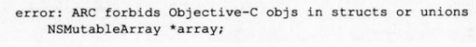

上一节复习了 Objective-C的内存管理,本节讲述ARC所引起的变化
实际上“引用计数式内存管理”的本质部分在ARC中并没有改变
就像“自动引用计数”
这个名称表示的那样,ARC只是自动地帮助我们处理“引用计数”的相关部分
在编译单位上,可设置ARC有效或无效,这一点便能佐证上述结论
比如对每个文件可选
择使用或不使用ARC
如图1-16所示:
设置ARC有效的编译方法如下所示
使用 clang(LLVM编译器)30或以上版本 指定编译器属性为“- fobjc-arc
Xcode42默认设定为对所有的文件ARC有效
另外,本书以后的章节中出现的源代码,如非明确说明,均为ARC有效
ARC无效时用的
源代码会作出“/*ARC无效*”标记
引用计数式内存管理的思考方式就是思考ARC所引起的变化
这一思考方式在ARC有效时也是可行的
只是在源代码的记述方法上稍有不同
到底有什
么样的变化呢?首先要理解ARC中追加的所有权声明
Objective-C编程中为了处理对象,可将变量类型定义为讪类型或各种对象类型
所谓对象类型就是指向 NSObject这样的 Objective-C类的指针,例如“ NSObject*”
id类型
用于隐藏对象类型的类名部分,相当于C语言中常用的“void*”
ARC有效时,id类型和对象类型同C语言其他类型不同,其类型上必须附加所有权修饰符
所有权修饰符一共有4种
附有__strong修饰符、__weak修饰符的变量类似于C++中的智能指针std: shared
ptr和std: weak_ptr std: shared_ptr可通过引用计数来持有C++类实例,std: weak_ptr
可避免循环引用
在不得不使用没有__strong修饰符/__weak修饰符的C++时,强烈推荐
使用这两种智能指针
在ARC有效的情况下编译源代码,必须遵守一定的规则
下面就是具体的ARC的规则
下面详细解释各项
内存管理是编译器的工作,因此没有必要使用内存管理的方法( retain/release/retain Count
autorelease)
以下摘自苹果的官方说明
“设置ARC有效时,无需再次键入 retain或 release代码
”
实际上,在ARC有效时,如果编译器使用了这些方法的源代码,就会出现如下错误:
一旦使用便会出现编译错误,因此可更准确地描述为:
“设置ARC有效时,禁止再次键入 retain或者是 release代码
”
retain Count和 release都会引起编译错误,因此不能使用以下代码
for (;;) {
NSUInteger count = [obj retaincount];
[obj release];
if (count == 1 ){
break;
}
}
ARC被设置为无效时,该源代码也完全不符合引用计数式内存管理的思考方式,也就是说
它在任何情况下都无法使用,所以没有问题
总之,只能在ARC无效且手动进行内存管理时使用 retain/release/retain Count/autorelease方法
一般通过调用 NSObject类的alloc类方法来生成并持有 Objective-C对象
id obj = [NSObject alloc];
但是就如 GNUstep的alc实现所示,实际上是通过直接调用 NSAllocateObject函数来生
成并持有对象的
在ARC有效时,禁止使用 NSAllocateObject函数
同 retain等方法一样,如果使用便会引
起编译错误
同样地,也禁止使用用于释放对象的 NSDeallocate Object函数
如1.2.2节所示,在ARC无效时,用于对象生成/持有的方法必须遵守以下的命名规则
alloc new copy mutableCopy
以上述名称开始的方法在返回对象时,必须返回给调用方所应当持有的对象
这在ARC有效时也一样,返回的对象完全没有改变
只是在ARC有效时要追加一条命名规则
以init开始的方法的规则要比 alloc/new/copy/mutable Copy更严格
该方法必须是实例方法,
并且必须要返回对象
返回的对象应为id类型或该方法声明类的对象类型,抑或是该类的超类
型或子类型
该返回对象并不注册到 autoreleasepool上
基本上只是对aloc方法返回值的对象
进行初始化处理并返回该对象
以下为使用该方法的源代码
id obj=[[NSObject alloc] init];
如此源代码所示,init方法会初始化 alloc方法返回的对象,然后原封不动地返还给调用方
下面我们来看看以init开始的方法的命名规则
-(id) initwithobject: (id)obi;
该方法声明遵守了命名规则,但像下面这个方法虽然也以init开始,却没有返回对象,因此
不能使用
-(void) initThisobject;
另外,下例虽然也是以init开始的方法但并不包含在上述命名规则里
请注意
-(void) initialize;
无论ARC是否有效,只要对象的所有者都不持有该对象,该对象就被废弃
对象被废弃时,
不管ARC是否有效,都会调用对象的 dealloc方法
-(void)dealloc{
/*
*此处运行该对象被废弃时
*必须实现的代码
*/
}
例如使用C语言库,在该库内部分配缓存时,如以下所示, dealloc方法需要通过fre来释
放留出的内存
-(void) dealloc{
free(buffer );
}
dealloc方法在大多数情况下还适用于删除已注册的代理或观察者对象
-(void) dealloc{
[NSNotificationCenter defaultcenter] removeobserver: self];
}
另外,在ARC无效时必须像下面这样调用[ super dealloc];
/*ARC无效*/
-(void)dealloc{
/*该对象用的处理*/
super dealloc];
}
ARC有效时会遵循无法显式调用 dealloc这一规则,如果使用就会同 release等方法一样,引
起编译错误

ARC会自动对此进行处理,因此不必书写[ super dealloc]. dealloc中只需记述废弃对象时所必需的处理
如_ autoreleasing修饰符项所述(参考13.3节),ARC有效时,使用@autoreleasepool块替
代 NSAutoreleasePool
NSAutoreleasePool类不可使用时便会引起编译器报错
虽说ARC有效时,不能使用区域( NSZone)
正如前所述(参考1.2.3节),不管ARC是
否有效,区域在现在的运行时系统(编译器宏OBJC2被设定的环境)中已单纯地被忽略
C语言的结构体( struct或 union)成员中,如果存在 Objective-C对象型变量,便会引起编译错误
struct Data {
NSMutableArray *array
}

虽然是LLVM编译器30,但不论怎样,C语言的规约上没有方法来管理结构体成员的生存
周期①
因为ARC把内存管理的工作分配给编译器,所以编译器必须能够知道并管理对象的生存
周期
例如C语言的自动变量(局部变量)可使用该变量的作用域管理对象
但是对于C语言
的结构体成员来说,这在标准上就是不可实现的
要把对象型变量加入到结构体成员中时,可强制转换为void*(见下一条规则)或是附加前
面所述的_ unsafe unretained修饰符(参考1,3.3节)
struct Data {
NSMutableArray __unsafe_unretained *array;
};
如前所述,附有 __unsafe_unretained修饰符的变量不属于编译器的内存管理对象
如果管理
时不注意赋值对象的所有者,便有可能遭遇内存泄漏或程序崩溃
这点在使用时应多加注意
在ARC无效时,像以下代码这样将id变量强制转换vid*变量并不会出问题
/*ARC无效*/ id obj = [[NSObject alloc] init]; void *p = obj;
更进一步,将该void*变量赋值给id变量中,调用其实例方法,运行时也不会有问题
id o = p; [o release];
但是在ARC有效时这便会引起编译错误

id型或对象型变量赋值给void*或者逆向赋值时都需要进行特定的转换
如果只想单纯地赋
值,则可以使用“__bridge转换”
id obj=[[NSObject alloc] init]; void *p=( bridge void *)obj; id o= (__bridge id)p;
像这样,通过“ __bridge转换",id和void*就能够相互转换
但是转换为void*的 __bridge转换,其安全性与赋值给__unsafe_unretained修饰符相近,甚
至会更低
如果管理时不注意赋值对象的所有者,就会因悬垂指针而导致程序崩溃
__bridge转换中还有另外两种转换,分别是“ __bridge_retained转换”和“ __bridge_transfer
转换
id obj = [[NSObject allow] init]; void *p=( __bridge_retained void *)obj
__bridge_retained转换可使要转换赋值的变量也持有所赋值的对象
下面我们来看ARC无效
时的源代码是如何编写的
/*ARC无效*/ id obj = [ [NSObject alloc] init]; void * p = obj; [(id)p retain];
__bridge_retained转换变为了 retain
变量obj和变量p同时持有对象
再来看几个其他的例子
void *p=0;
{
id obj=[[NSObject alloc] init]:
p=(__bridge_retained void *)obj
}
NSLog(@"class=%@",[( bridge id)p class]);
变量作用域结束时,虽然随着持有强引用的变量obj失效,对象随之释放,但由于__bridge_retained转换使变量p看上去处于持有该对象的状态,因此该对象不会被废弃
下面我们比较
下ARC无效时的代码是怎样的
/*ARC无效*/
void *p=0;
{
id obj= [[NSObject alloc] init]
/* [obj retaincount]->1*/
[obj retain];
/*[obj retainCount]->2*/
[obj release];
/* [obj retaincount]->1*/
}
/*
*[(id)p retainCount]->1
*即
*[obj retainCount]-> 1
*对象仍存在
*/
NSLog(@"class=%@",[(__bridge id)p class]);
__bridge_transfer转换提供与此相反的动作,被转换的变量所持有的对象在该变量被赋值给
转换目标变量后随之释放
id obj=(__bridge_transfer id)p
该源代码在ARC无效时又如何表述呢?
id ob = (id)p; [obj retain]; [(id)p release]i
同__bridge_retained转换与 retain类似,__bridge__transfer转换与 release相似
在给 id obj赋
值时 retain即相当于 __strong修饰符的变量
如果使用以上两种转换,那么不使用id型或对象型变量也可以生成、持有以及释放对象
虽然可以这样做,但在ARC中并不推荐这种方法
使用时还请注意
void *p=(__bridge_retained void *)[[NSObject alloc] init]; NSLog(@"class=g@",[(__bridge id)p class]); (void)(__bridge transfer id)p;
该源代码与ARC无效时的下列源代码相同
/*ARC无效* id p=[[NSObject alloc] init]; NSLog(%@"class=%@", [ p class]); [p release];
这些转换多数使用在 Objective-C对象与 Core Foundation对象之间的相互变换中
Core Foundation对象主要使用在用C语言编写的 Core Foundation框架中,并使用引用计数
的对象
在ARC无效时, Core Foundation框架中的 retain/release分别是 CFRetain/ CFRelease
Core Foundation对象与 Objective-C对象的区别很小,不同之处只在于是由哪一个框
架( Foundation框架还是 Core Foundation框架)所生成的
无论是由哪种框架生成的对象,
旦生成之后,便能在不同的框架中使用
Foundation框架的AP|生成并持有的对象可以
用 Core Foundation框架的AP释放
当然,反过来也是可以的
因为 Core Foundation对象与 Objective-C对象没有区别,所以在ARC无效时,只用简
单的C语言的转换也能实现互换
另外这种转换不需要使用额外的CPU资源,因此也被称
为“免费桥”(Toll-Free Bridge)
Toll-Free Bridge类一览可参考以下文档
Toll-freebrIdged Types http://developer.applecom/library/mac/documentation/CoreFoundation/Conceptual/CFDesign Concepts/Articles/tollFreeBridgedTypes.html
以下函数可用于 Objective-C对象与 Core Foundation对象之间的相互变换,即 Toll-Free
Bridge
转换
CFTypeRef CFBridgingRetain(id x){
return __bridge_retained CFTypeRef)X;
}
id CFBridgingRelease(CFTypeRef x){
return __bridge_transfer id)x:
}
我们来看看到底是如何使用的
以下将生成并持有的 NSMutableArray对象作为Core
Foundation对象来处理
CFMutableArrayRef cfobject = NULL;
id obj= [[NSMutableArray alloc] init];
cfobject CFBridgingRetain(ob);
CFShow(cfobject);
printf ("retain count d
", CEGetRetainCount(cfobject));
printf("retain count after the scope d
", CFGetRetaincount(cfobject));
CFRelease(cfobject);
该源代码正常运行后,会输出以下结果
()表示空的数组
( ) retain count 2 retain count after the scope = 1
由此可知, Foundation框架的API生成并持有的 Objective-C对象能够作为 Core Foundation
对象来使用
也可以通过 CFRelease来释放
当然,也可以使用_ bridge retained转换来替代
CFBridgingRetain
大家可选用自己更熟悉的方法
CEMutableArrayRef cfobject = __bridge_retained CEMutableArrayRef)obj;
以下基于 CFGetRetain Count的值来确认对象的所有状况
CFMutableArrayRef cfobject = NULL;
{
id obj=[[NSMutableArray alloc] init]:
/*
*变量obj持有对生成并持有对象的强引用
*/
cfOjbect = CFBridgingRetain(obj);
//通过 CFBridgingRetain,
//将对象 CFRetain,
//赋值给变量 object
CFShow(cfObject);
printf("retain count - %d
",CFGetRetainCount(cfOjbect));
//通过变量obj的强引用和
//通过CFBridgingRetain,
//引用计数为2
}
/*
*因为变量obj超出其作用域,所以其强引用失效,
*引用计数为1
/
printf ("retain count after the scope %d
", CFGetRetainCount( cfobject));
CFRelease (cfObject );
/*
*因为将对象 CFRelease,所以其引用计数为0,
*故该对象被废弃
使用__bridge转换来替代 CFBridgingRetain或__bridge_retained转换时,源代码会变成什 么样呢?
CFMutableArrayRef cfobject =NULL;
{
id obj = [ [NSMutableArray alloc] init];
/*
*变量obj持有对生成并持有对象的强引用
*/
cfObject = __bridge CFMutableArrayRef )obj;
CFShow( cfObject );
printf ("retain count %d
", CFGetRetainCount( cfobject ));
/*
*因为 bridge转换不改变对象的持有状况,
*所以只有通过变量obj的强引用,
*引用计数为1
}
/*
*因为变量ob超出其作用域,
*所以其强引用失效,对象得到释放,
*无持有者的对象被废弃
*/
/*
*此后对对象的访问出错!(悬垂指针)
*/
printf("retain count after the scope = %d
", CFGetRetainCount cfobject))；
CFRelease( cfObject);
由此可知, CFBridgingRetain或者__bridger_etained转换是不可或缺的
这次反过来,将使用 Core Foundation的AP生成并持有对象,将该对象作为 NSMutableArray 对象来处理
CEMutableArrayRef cfobject
CFArrayCreateMutable(kCFAllocatorDefault, 0, NULL);
printf ("retain count d
", CFGetRetaincount (cfobject));
id obj = CFBridgingRelease(cfobject);
printf ("retain count after the cast %d
", CFGetRetainCount(cfobject));
NSLog(@"class=%@", obj);
由此可知,与之前相反的由 Core foundation框架的API生成并持有的 Core Foundation对象
也能够作为 Objective-C对象来使用
其运行结果如下:
retain count = 1 retain count after the cast = 1
当然也可使用__bridge_transfer转换替代 CFBridgingRelease
id obj = (__bridge_transfer id)cfobject;
此处也要基于 CFGetRetainCount的值来确认对象的持有状况
CFMutableArrayRef cfObject = CFArraycreateMutable( kCFAllocatorDefault, 0, NULL);
printf ("retain count = %d
", CFGetRetainCount cfobject ));
/*Core foundation框架的API生成并持有对象
*之后的对象引用计数为“1
*/
id obj = CFBridgingRelease( cfObject );
/*
*通过 CFBridgingRelease赋值
*变量
bj持有对象强引用的同时
*对象通过 CFRelease释放
*/
printf("retain count after the cast %d
", CFGetRetainCount( cfobject ));
/*
*因为只有变量obj
*持有对生成并持有对象的强引用,
*故引用计数为“1
*
*另外,因为经由 CFBridgingRelease转换后,
*赋值给变量 object中的指针
*也指向仍然存在的对象,
*所以可以正常使用
*/
NSLog(@"class=%@",obj)；
}
/*
*因为变量obj超出其作用域,
*所以其强引用失效,对象得到释放,
*无所有者的对象随之被废弃
*/
以下为用__bridge转换替代 CFBridgingRelease或__bridge_transfer转换的情形
CEMutableArrayRef cfobject
CFArrayCreateMutable( kCFAllocatorDefault, 0, NULL );
printf("retain count 8d
", CFGetRetainCount( cfobject ));
/*
Core Foundation框架生成并持有对象
之后的对象引用计数为“1"
*/
id obj=(__bridge id )cfobject:
/*
*因为赋值给附有__strong修饰符的变量中,
*所以发生强引用
*/
printf("retain count after the cast= %d
", CFGetRetainCount( cfObject ));
/*
*因为变量obj持有对象强引用且
*对象没有进行 CFRelease,
*所以引用计数为“2
*/
NSLog (@"class=%@", obj);
/*
*因为变量obj超出其作用域,
*所以其强引用失效,对象得以释放
*
*因为引用计数为“1”,所以对象仍然存在
*发生内存泄漏!
*/
因此,必须恰当使用 CFBridgingRetain/CF BridgingRelease或者__bridge_retained/__bridge_transfer转换
在将 Objective-C变量赋值给C语言变量,即没有附加所有权修饰符的void*等指
针型变量时,伴随着一定的风险
在实现代码时要高度重视